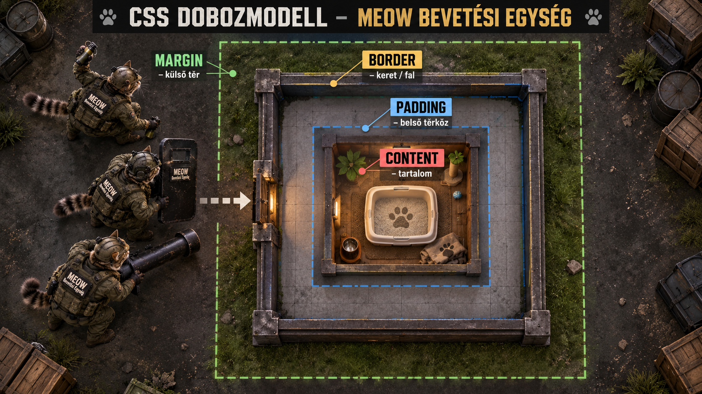
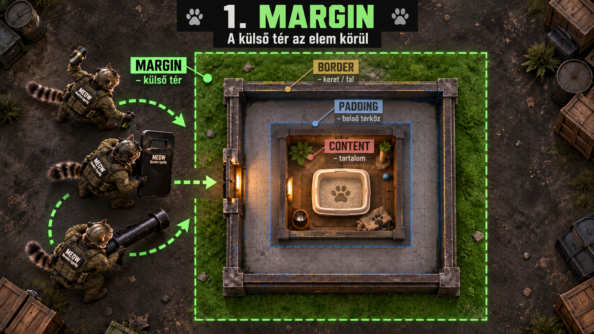
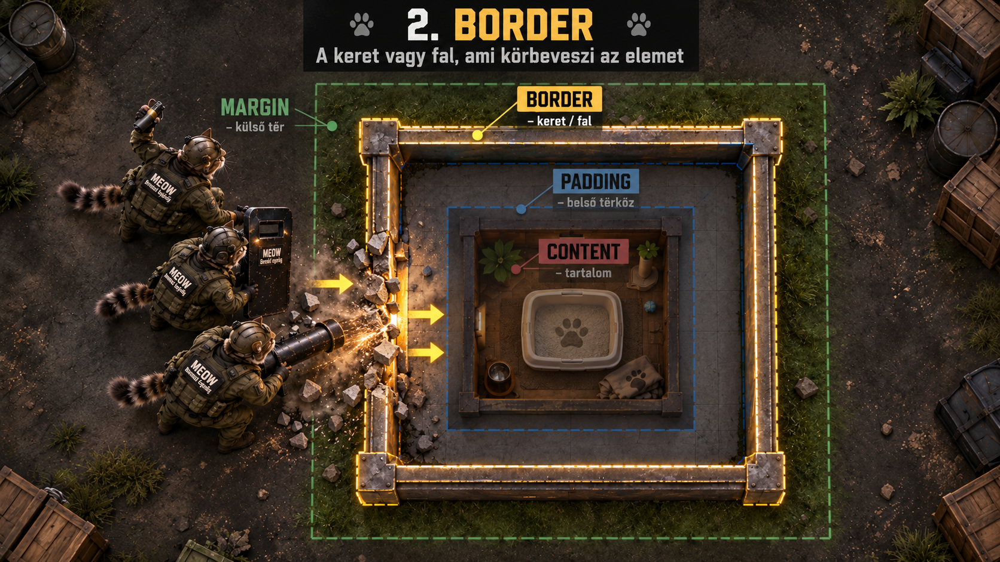
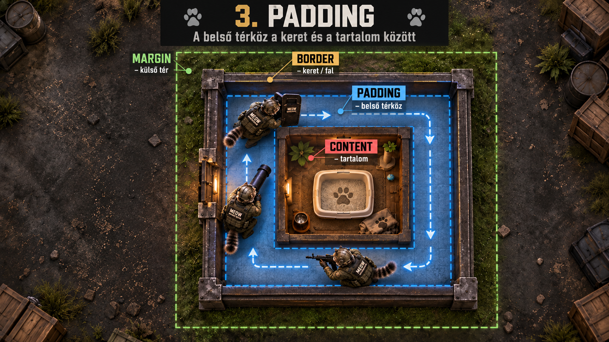
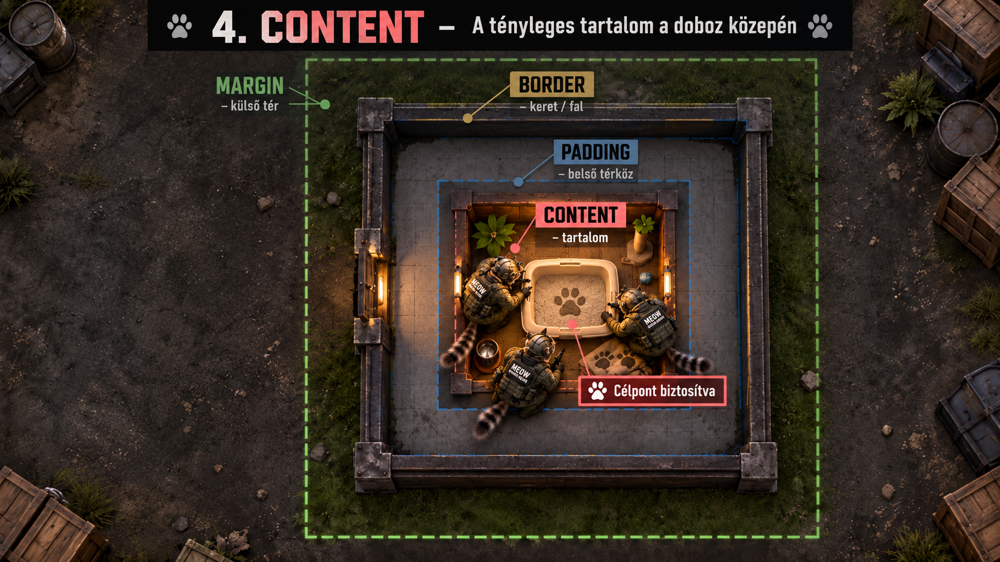

Egy elem körül négy fontos réteget különböztetünk meg. Belül van a content, ezt veszi körül a padding, majd a border, végül kívül a margin.

Hogyan olvasd az ábrát? A középső alomtálca a content. A körülötte lévő belső szabad terület a padding. A fal a border. A falon kívüli zóna a margin.
1. Margin - a külső távolság
A margin az elem borderén kívül helyezkedik el. Nem az elem belsejét növeli, hanem azt szabályozza, mekkora hely legyen az elem és a körülötte lévő más elemek között.

A MEOW egység még az objektumon kívül mozog. Ez a külső tér felel meg a marginnak: az elem saját keretén kívüli távolságnak.
Élő példa: ugyanazok a dobozok különböző margóval
A három elem tartalma és paddingje azonos. Csak a margójuk változik, ezért a dobozok közötti távolság lesz más.
A bal és jobb margó auto értéke egy megadott szélességű blokkelemet vízszintesen középre tud igazítani.
2. Border - a látható keret
A border a padding és a margin közötti szegély. Egyszerre állíthatjuk a vastagságát, stílusát és színét. A border-radius a sarkok lekerekítésére szolgál.

A fal jelképezi a bordert. A MEOW egységnek ezt kell áttörnie, mielőtt az elem belső területére, vagyis a paddingre jutna.
A padding az elem contentje és bordere között található. Ha növeljük, a tartalom távolabb kerül a kerettől, miközben a padding továbbra is az elem saját belső területe.

A falon belüli járható folyosó a padding. A MEOW egység már az elemen belül van, de a tényleges tartalmat még nem érte el.
Élő példa: ugyanaz a tartalom különböző paddinggel
A külső border mindhárom doboznál hasonló. Figyeld meg, hogyan nő a tartalom és a keret közötti hely.
A content az a terület, ahol az elem tényleges tartalma van: szöveg, kép, lista vagy bármilyen más HTML-tartalom. Alapesetben a width és height ezt a content területet méretezi.

A művelet célpontja az alomtálca: ez a content. A margin, border és padding mind ezt veszi körül.
5. Egy teljes élő doboz
Ezen az egy elemen egyszerre figyelhető meg mind a négy réteg. A háttér a content/padding területét jelzi, az arany keret a border, a körülötte lévő üres hely pedig a margin.
content-box esetén a megadott width csak a content szélessége, ezért a padding és a border még hozzáadódik. border-box esetén a padding és a border már beleszámít a megadott szélességbe.